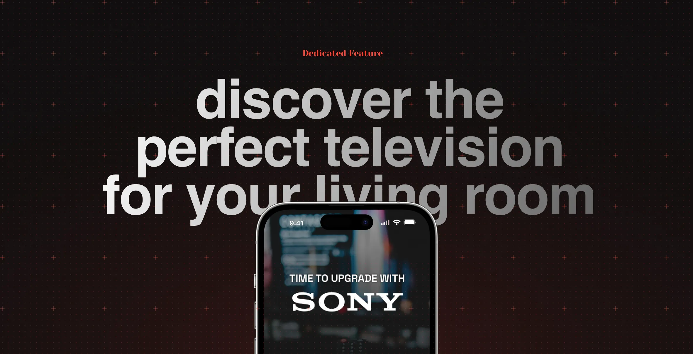
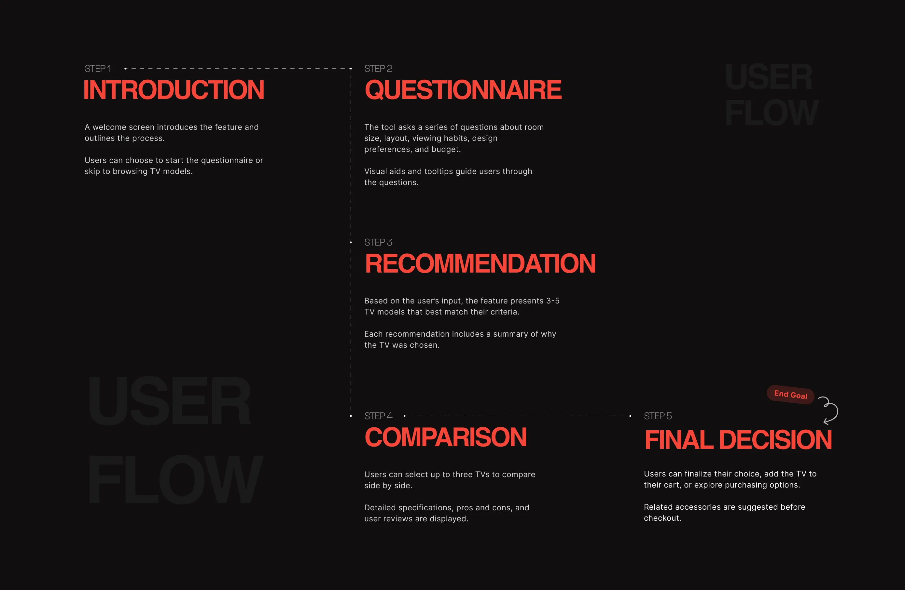
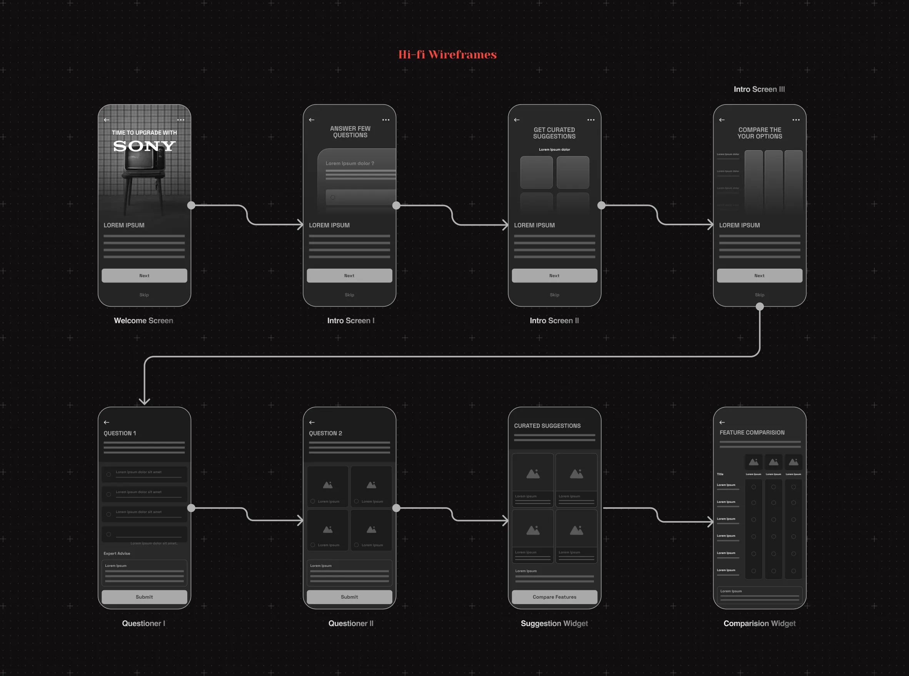
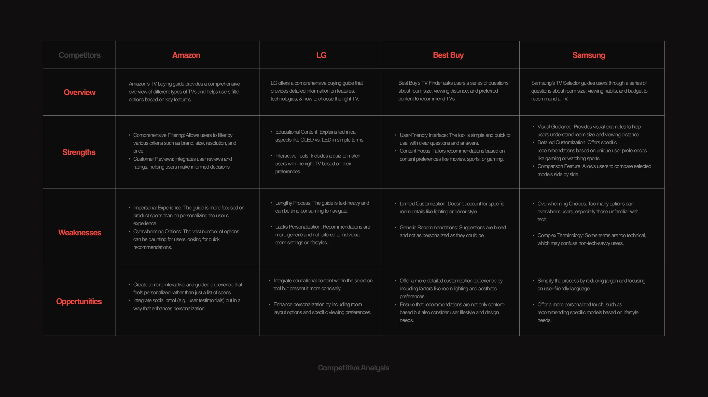

The Scenario
A new home, an outdated TV, and too many choices
A couple moves into their new apartment in Bangalore, eager to make their spacious living room the hub for family gatherings, movie nights, and cricket matches.
Their old TV looks out of place and can't do justice to the room. But the Indian TV market is flooded with options and technical jargon, making it hard to know where to start.
Problem Statement
Buyers need a TV that fits their space, budget, and taste — without the guesswork
Shoppers want a TV that complements their home, delivers great picture and sound for their favorite content, and stays within budget — but feel lost among the choices available.
Goals
What the feature needed to deliver
- Fit the room's aesthetic and modern feel
- Excellent picture and sound for movies and sports
- Stay within a reasonable budget
- Smart features for Netflix, Prime Video, Hotstar and more
- Easy setup with reliable after-sales support
Competitive Analysis
Where existing TV finders fall short
I audited TV-selection tools from Samsung, LG, Best Buy, and Amazon to find strengths, weaknesses, and gaps Sony could fill.
Despite the competition, Sony's ecosystem and user base uniquely position it to deliver a more personalized, India-tailored selection experience.

Competitive analysis across Amazon, LG, Best Buy, and Samsung
Key Takeaways
Four principles that shaped the solution
- Personalization is key — factor in room layout, lighting, and lifestyle
- Simplify the experience — avoid overwhelming technical choices
- Use visual, interactive elements to guide the process
- Weave in concise educational content without causing overload
Segmentation & Personas
Four kinds of buyers, four different needs
Tech-Savvy Enthusiasts
Chase cutting-edge features like OLED and high refresh rates; research and compare extensively before buying.
Family-Centric Buyers
Need a versatile TV for kids' shows and movie nights; want quality balanced with budget from a reliable brand.
Budget-Conscious Shoppers
Focused on best value; decisions driven by price comparisons, reviews, and sales.
Aesthetic-Focused Users
Care how the TV fits their décor; prefer sleek, wall-mountable designs.
Proposed Solution
A guided questionnaire that turns preferences into recommendations
A step-by-step tool asks about room size, viewing distance, content preferences, lighting, design taste, and budget — then generates a personalized shortlist with a clear reason for each pick.
A comparison tool lets users weigh up to three models side by side, and contextual tips explain terms like OLED vs. LED only when they matter — without derailing the flow toward checkout, financing, and matching accessories.
I started with low-fidelity wireframes to nail the structure first: what each screen needed to ask, and in what order, without getting distracted by color or type.
These went through a few rounds of internal review before any visual design work began — catching flow issues early, while they were still cheap to fix.

Hi-fi wireframes for the guided questionnaire flow
Once the wireframes validated the core structure, I mapped the complete journey end to end — every screen a user could hit, from the welcome intro through each questionnaire step to the final recommendation and comparison.
This flow became the shared reference for the rest of the project: it's what stakeholders reviewed for feedback, and what engineering used to scope the build before a single pixel of high-fidelity UI was drawn.

End-to-end user flow, from introduction to final decision
With the flow validated, I layered in Sony's brand colors, typography, iconography, and photography — turning bare wireframes into polished, on-brand screens ready to hand off to engineering.
Every screen carries the same visual language: dark backgrounds, the Sony wordmark treatment, and a consistent orange accent for primary actions, so the feature feels native to Sony's existing site rather than bolted on.
Final mockups: welcome, questionnaire, recommendations, and comparison
Design Considerations
Built to feel like Sony, work everywhere, for everyone
The tool follows Sony's visual identity for a cohesive, premium feel, stays fully responsive across desktop, tablet, and mobile, and layers in micro-interactions — smooth question transitions and subtle feedback on each answer.
Accessibility was built in from the start: high-contrast color schemes, scalable fonts, and text alternatives for non-text elements.
What this solved for
A questionnaire-driven flow replaced overwhelming spec sheets with a guided path to the right TV — matched to room, lighting, budget, and viewing habits, with a side-by-side comparison tool to close the decision.